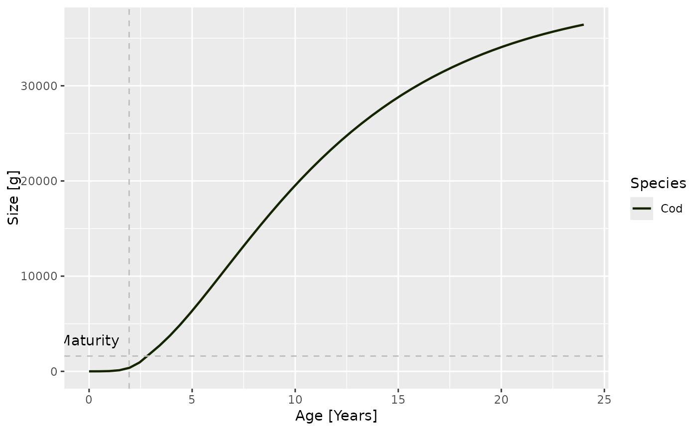

Plot growth curves giving weight as a function of age
Edit this page. Source:R/plots.R
plotGrowthCurves.RdIf given a MizerSim object, uses the growth rates at the final time of a simulation to calculate the size at age. If given a MizerParams object, uses the initial growth rates instead.
plotGrowthCurves(object, species, max_age = 20, percentage = FALSE, print_it = FALSE)
Arguments
| object | MizerSim or MizerParams object |
|---|---|
| species | Name or vector of names of the species to be plotted. By default all species are plotted. |
| max_age | The age up to which the weight is to be plotted. Default is 20 |
| percentage | Boolean value. If TRUE, the size is shown as a percentage of the maximal size. |
| print_it | Display the plot, or just return the ggplot2 object. Defaults to FALSE |
| ... | Other arguments (unused) |
Value
A ggplot2 object
Details
When the growth curve for only a single species is plotted, horizontal lines are included that indicate the maturity size and the maximum size for that species. If furthermore the species parameters contain the variables a and b for length to weight conversion and the von Bertalanffy parameter k_vb, then the von Bertalanffy growth curve is superimposed in black.
Examples
data(NS_species_params_gears) data(inter) params <- suppressMessages(set_multispecies_model(NS_species_params_gears, inter)) sim <- project(params, effort=1, t_max=20, t_save = 2, progress_bar = FALSE) plotGrowthCurves(sim, percentage = TRUE)plotGrowthCurves(sim, species = "Cod", max_age = 24)